.
.
Model
- Quantum efficiency:
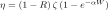
(surface reflection, collection, absorption in the depleted region) (Einstein 1905). - pin:
 chosen
chosen 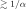
for absorption but small for speed: trade-off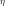
–bandwidth. Waveguide photodiodes decouple them (light travels along the junction). - Bandwidth:
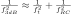
,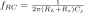
, (junction capacitance).
(junction capacitance). - APD: high-field region gives impact ionisation; mean gain
 , excess noise
, excess noise 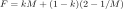
,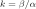
ionisation ratio (Si : low noise; InGaAs/InP
: low noise; InGaAs/InP 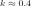
).
Worked example
InGaAs pin at 1550 nm,  :
:
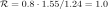
A/W. Diameter 30 µm,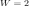
µm: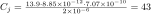
fF; with 50 Ω,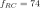
GHz;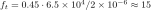
GHz (holes,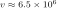
cm/s): transit-limited, ≈ 15 GHz overall → 10–25 Gb/s receivers.Related detectors
Gain inside the device: avalanche photodiodes and photoconductors and phototransistors; the circuit around the diode and its speed: photodiode circuits; arrays of photodiodes: CCD and CMOS image sensors.
Picture: responsivity versus wavelength
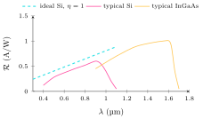
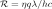
for silicon with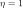
, with typical silicon and InGaAs photodiodes, each cut off at its band gap.The ideal line
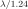
rises with (more photons per watt) until the cut-off
(more photons per watt) until the cut-off 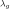
; real curves fall at short because carriers are generated near the surface and recombine.
Engineering applications
Optical receivers (pin + transimpedance amplifier), APDs for long reach and LiDAR, Ge-on-Si waveguide detectors in silicon photonics, image sensors (CMOS pinned photodiodes), single-photon avalanche diodes (SPADs, Geiger mode) for photon counting.
Exam-style exercise
(a) Cut-off wavelengths of Si (1.12 eV), Ge (0.66 eV), In
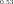
Ga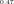
As (0.75 eV). (b) A Si photodiode gives 0.48 A/W at 850 nm: QE? (c) Maximum possible responsivity at 850 nm. (d) The diode is 1 mm² and receives 1 mW/cm²: photocurrent.Solution
(a)
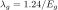
: 1.11, 1.88, 1.65 µm. (b)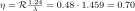
. (c) : 0.69 A/W. (d) µW → 4.8 µA.
µW → 4.8 µA.
Pitfall
Responsivity grows with at fixed (more photons per watt) until the cutoff , where collapses:
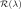
is a sawtooth-like curve, not flat.